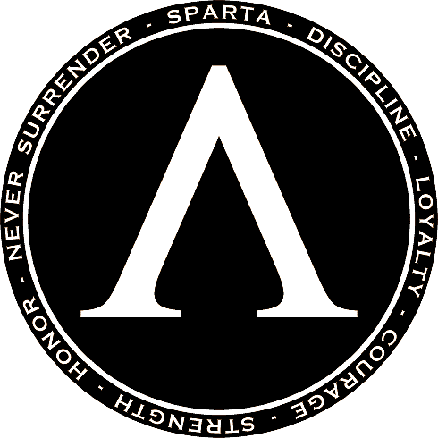
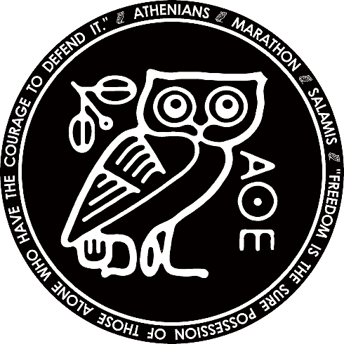

| 
SPARTA Sparta a fost un oraș-stat proeminent în Grecia, care a ajuns să devină puterea terestră militară dominantă din regiune. |

ATENA Atena este orașul-stat grecesc care este considerat leagănul civilizației și casa democrației. |
Liga Peloponesiaca Liga Peloponeziană a fost o alianță în Peloponez din secolele VI-IV î.Hr., dominată de Sparta. Este cunoscut în principal pentru că a fost unul dintre cei doi rivali din războiul peloponesiac. Liga a fost organizată cu Sparta ca hegemon și a fost controlată de consiliul aliaților, care era compus din două corpuri: adunarea spartiților și Congresul aliaților. Fiecare stat aliat avea un vot în Congres, indiferent de mărimea sau puterea geopolitică a acelui stat. Niciun tribut nu a fost plătit decât în perioadele de război (în principal împotriva ligii de la Delos), când ar putea fi solicitată o treime din armata unui stat. Numai Sparta putea convoca un Congres al Ligii. Toate alianțele au fost făcute numai cu Sparta, așa că, dacă doreau acest lucru, statele membre trebuiau să formeze alianțe separate între ele. |
Liga de la Delos Liga de la Delos reprezintă o inovație majoră în practica alianțelor militare, ale lumii antice, în măsura în care reprezintă o organizare militară și politică permanentă, și nu o simplă juxtapunere conjucturală de forțe militare, cum erau alianțele bilaterale sau multiple anterioare. Liga are un consiliu, sunedrion, convocat anual la Delos, din care fac parte reprezentanții fiecărei cetăți membre, fiecare având câte un vot. Principalul obiectiv este constituirea unei flote permanente, gata oricând să intervină în favoarea oricăreia dintre cetățile aliate; în acest scop, fiecare cetate trebuie să participe cu câte un contingent de corăbii, cu echipajele mobilizate permanent, adică cel puțin 8 luni din an, pe cheltuială proprie, sau, dacă nu poate, plătește o contribuție anuală, phoros, la tezaurul comun, păstrat în sanctuarul de la Delos. Cu aceste fonduri, atenienii să angajează să construiască, să echipeze și să întrețină cota de triere care ar fi revenit fiecărei cetăți care plătea tributul. |
Monarhia Monarhia este un sistem politic în care puterea este simbolizată de o singură persoană numită monarh (rege, împărat, principe, duce, etc.). A fost o formă de guvernământ obișnuită în întreaga lume în perioadele antică și medievală. |
Democratia Democrația este un regim politic care se bazează pe voința poporului. Principiile de bază ale democrației sunt votul universal și suveranitatea națiunii. De esența democrației moderne ține respectarea drepturilor omului (egalitatea în fața legii, dreptul la opinie etc.), pluripartidismul, limitarea și separarea puterilor în stat. În antichitate, orașul-stat Atena a experimentat o formă de democrație directă, prin care toți cetățenii discutau periodic problemele cetății în agora și luau împreună decizii. |
Sparta a fost în principal un teren agricol datorită locației sale interioare. Cele mai importante importuri au fost metalele. În Sparta, oamenii erau în principal războinici; alții erau sclavi. Economia lor se baza în principal pe agricultură. |
Economia Atenei depindea mai mult de comerț. Atena a devenit cea mai importantă putere comercială a Mediteranei până în secolul al V-lea î.Hr. |
Sparta era aseata in fundul unei vai adanci si muntii care o inconjurau ii serveau drept bariera contra influentei straine. Atena era un oras comercial. |
Atena era asezata intr-un tinut muntos , care se ridica in mijlocul unei campii. Era un oras pe care-l mangaiau vanturile racoritoare ale marii si care privea in lume cu ochii unui copil fericit. |
În Sparta, femeile aveau drepturi pe care alte femei grecești nu le aveau. În Sparta, femeile erau mai puternice și stabileau legături cu bărbații după alegerea lor. De asemenea, ar putea deține singuri proprietăți. |
Legăturile de familie din Atena erau mai puternice, iar femeile erau în mod legal dependente de soții sau de tatăl lor. În Atena, femeile făceau treburi precum țesutul sau gătitul, dar în Sparta femeile erau libere de toate aceste treburi. |